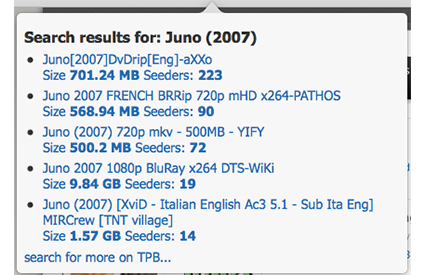

'Searchless IMDB'
plugin helps you to search less for movies.
Simply go to
IMDB
open movie page and we will search for 5 most recent entries in
TPB
and give you magnet links for them.
1. Go to
IMDB
2. Open movie page
3. Get notification:
4. Check results: 